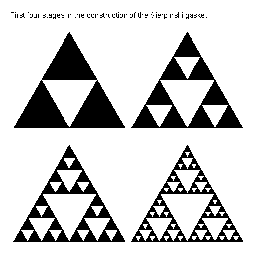
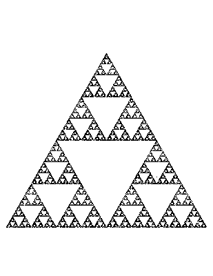

![[HOME]](triangle_answer_files/home.gif) The Geometry Center Home Page
The Geometry Center Home Page
Article: 135 of geometry.puzzles Newsgroups: geometry.puzzles From: sander@geom.umn.edu (Evelyn Sander) Subject: Re: Triangle Puzzle Organization: The Geometry Center, University of Minnesota Date: Wed, 1 Dec 1993 00:16:44 GMT Lines: 171
As some people pointed out, the points which you can reach even after an arbitrarily long time form something called a Sierpinski gasket. This is the part of the equilateral triangle remaining after repeatedly removing inverted equilateral triangles of half the height. The following shows the removal of the first four sets of triangles:

Here is an approximate picture made by having the computer play the game above. This includes points that are not contained in the gasket, but it looks approximately like the gasket:

There is an important distinction between looking almost the same and really being the set. Please see a comment on this by John Conway. If I had chosen a starting point in the gasket, I would have the gasket, rather than adding any points. I also have enclosed the program used to generate this gasket so that if you are skeptical, you can fiddle with the program and convince yourself.
One way to solve the problem is to consider what happens to the entire triangle when it goes halfway to a vertex. The result will be a triangle starting at that vertex, but with half the side length of the original. Thus no matter which of the three vertices you pick, you will miss the middle equilateral triangle. Therefore the set of points points you can reach after going halfway to a vertex once is exactly the same as the first step in constructing the Sierpinski gasket (see the pictures). Likewise, looking at what happens when each of these three triangles goes halfway to each vertex gives the second step in constructing the Sierpinski gasket. In fact, at each step, the set of all possible points after going halfway to the vertices is the same as the set of points left at that step of computing the gasket.
I wanted to add a comment about what happens if instead of allowing you to pick the vertex, I specify a particular sequence of vertices; in particular, what if the vertices must be chosen in a cyclic permutation? I tried this, and only saw three limit points on the screen. At first I thought there was a mistake in the code, but then I realized that this follows from the contraction mapping principle. This suggests a more general principle at work regarding the limit points of any specified sequence. I do not wish to elaborate in this article. It is similar to the relationship between middle third Cantor sets and infinite sequences of zeros and ones. For more information, try Devaney's book Introduction to Chaotic Dynamical Systems.
The Sierpinski gasket is fairly trendy; in addition to being aesthetically pleasing, it is a fractal. Although there are many explanations of this idea, let me briefly explain. The Sierpinski gasket has fractional Hausdorff dimension; here is an intuitive definition of Hausdorff dimension. It is not meant to be at all rigorous. I will give a reference for a more precise definition.
Given a straight line segment of length one in the plane, it fits exactly inside an equilateral triangle of height one. How many triangles of height 1/2 does it take to cover the line segment? Exactly two. How many triangles of height 1/4 does it take? Exactly four. Thus the height of the triangle is inversely proportional to the number of triangles it takes to cover. We call a shape which eventually has this property dimension one. Now consider an equilateral triangle of height one in the plane. How many equilateral triangles of height 1/2 does it take to cover the shape now? Exactly four. How many triangle of height 1/4 does it take to cover? Sixteen. Thus the square of the height of the triangle is inversely proportional to the number of triangles needed to cover. We call a shape which eventually has this property dimension two. Now consider the Sierpinski gasket. It takes one triangle of height one to cover, three triangles of height 1/2, nine triangles of height 1/4, and etc. Thus the dimension of the gasket must be somewhere between one and two. In fact, it must be dimension log(3)/log(2). Thus the gasket is a fractal.
Thank you to everyone who asked questions and took such an interest in this puzzle. I will have to post more in geometry.puzzles. Hope you enjoyed it too.
References:
M. Barnsley 'Fractals Everywhere' M. Schroeder 'Chaos, Fractals, and Power Laws'
Click here for a C program which plays the game. The output is in Postscript.
The Geometry Center Home Page
Comments to:
webmaster@www.geom.uiuc.edu
Created: May 15 1994 ---
Last modified: Jun 18 1996